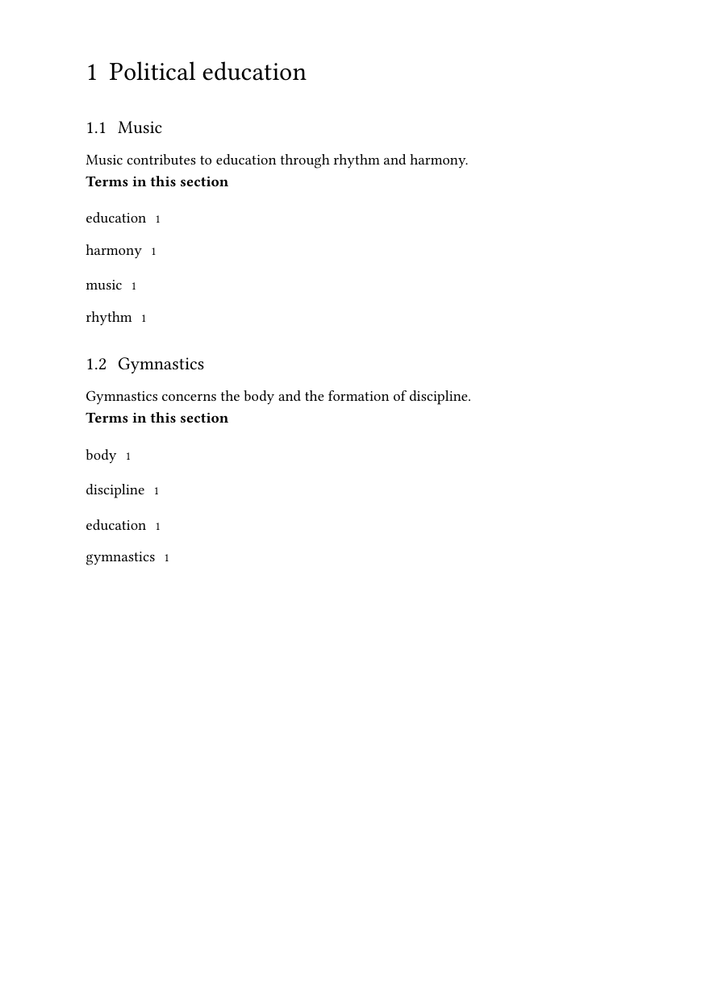
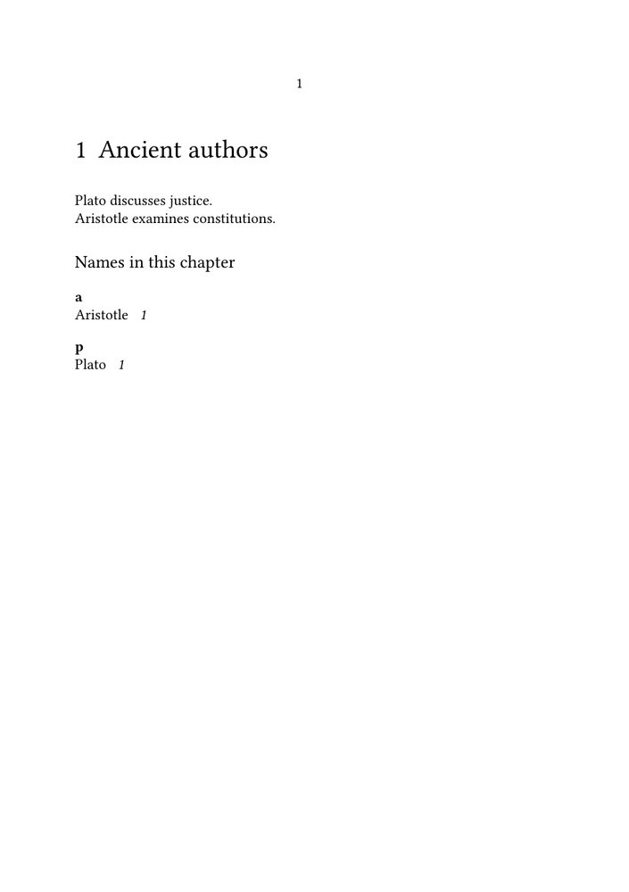

Under construction. This page is being revised as part of the reorganisation of the documentation on indexes and registers in ConTeXt. Examples, screenshots, and links may still change.
Indexes and registers in ConTeXt ·
Overview ·
Tutorial ·
How-to guides ·
Reference ·
Explanation
How-to 7: Creating local and sectional registers ·
Previous: Managing page ranges and compressed references
Contents
-
1
Creating local and sectional registers
- 1.1 1. Understand the difference between collecting and placing
- 1.2 2. Place the complete register
- 1.3 3. Place a register for the current chapter
- 1.4 4. Complete MWE: one register per chapter
- 1.5 5. Place a register for the current section
- 1.6 6. Complete MWE: one register per section
- 1.7 7. Use criterium=local
- 1.8 8. Reuse one environment at different structural levels
- 1.9 9. Use a local custom register
- 1.10 10. Place both a local and a complete register
- 1.11 11. Format local registers differently
- 1.12 12. Avoid duplicate structural headings
-
1.13
13. Frequent errors
- 1.13.1 13.1. Placing the register outside its structural unit
- 1.13.2 13.2. Using criterium=all for a local register
- 1.13.3 13.3. Expecting local placement to create a separate register
- 1.13.4 13.4. Closing the section before placing its register
- 1.13.5 13.5. Assuming local always means chapter
- 1.13.6 13.6. Using inconsistent entry forms
- 1.13.7 13.7. Expecting the register after one compilation
- 1.13.8 13.8. Reproducing every page of a large MWE as PNG
- 1.14 14. A practical workflow
- 1.15 15. What this guide has established
- 1.16 16. Next steps
A complete index normally collects entries from the entire document. Some publications also need smaller registers restricted to a particular structural unit.
Typical examples include:
- a list of names used in one chapter;
- a subject index at the end of each chapter;
- a register of technical terms for one section;
- a local index accompanying an appendix or case study.
ConTeXt restricts register placement with the criterium setting.
Goal. This guide shows how to place entries belonging to the current chapter, the current section, or the current local structural context, while retaining the option of a complete register at the end of the document.
1. Understand the difference between collecting and placing
Register commands collect entries throughout the document:
\index{justice}
The placement command decides which collected entries are shown:
\placeindex [criterium=all]
or:
\placeindex [criterium=chapter]
The same collected data can therefore be presented in different scopes.
A local register does not create a separate index database. It selects a structural subset of the entries already collected.
2. Place the complete register
The complete register uses:
\placeindex [criterium=all]
With a heading:
\subject{Complete index}
\placeindex
[criterium=all]
The predefined command:
\completeindex
also places the complete index with its heading.
Use criterium=all when you need to make the scope explicit alongside local placements.
3. Place a register for the current chapter
At the end of a chapter, use:
\placeindex [criterium=chapter]
This selects entries associated with the current chapter.
A typical structure is:
\startchapter
[title={Justice}]
\index{justice}
\index{Plato}
Chapter text.
\subject{Chapter index}
\placeindex
[criterium=chapter]
\stopchapter
The placement command must remain inside the chapter whose entries it should display.
3.1. Use a custom register by chapter
For a register of names:
\defineregister [names]
Within the chapter:
\startchapter
[title={Ancient philosophy}]
\names{Plato}
\names{Aristotle}
Chapter text.
\subject{Names in this chapter}
\placeregister
[names]
[criterium=chapter]
\stopchapter
The same register can still be placed globally in the back matter:
\placeregister [names] [criterium=all]
4. Complete MWE: one register per chapter
The following MWE creates two chapters. Each chapter ends with its own local subject register, followed by a complete index at the end of the document.
\mainlanguage[en]
\setuppapersize
[A5]
\setupbodyfont
[libertinus,10pt]
\setuplayout
[backspace=18mm,
topspace=14mm,
header=0mm,
footer=8mm,
width=middle,
height=middle]
\setupregister
[index]
[n=1,
indicator=yes,
indicatorstyle=bold,
distance=.75em]
\setuphead
[subject]
[style=bold,
before=\blank[medium],
after=\blank[small]]
\starttext
\startchapter
[title={Plato}]
Plato discusses
\index{justice}
justice,
\index{education}
education, and
\index{political philosophy}
political philosophy in the
\index{Republic}
\emph{Republic}.
\subject{Index to this chapter}
\placeindex
[criterium=chapter]
\stopchapter
\startchapter
[title={Aristotle}]
Aristotle examines
\index{citizenship}
citizenship,
\index{constitution}
constitutions, and
\index{political community}
political community in the
\index{Politics}
\emph{Politics}.
\subject{Index to this chapter}
\placeindex
[criterium=chapter]
\stopchapter
\page
\subject{Complete index}
\placeindex
[criterium=all]
\stoptext
Compile the document at least twice.
The complete output contains several pages. For reasons of space, only the page showing the first chapter register should be reproduced as a PNG.
5. Place a register for the current section
Inside a section, use:
\placeindex [criterium=section]
For example:
\startsection
[title={Education}]
\index{education}
\index{music}
\index{gymnastics}
Section text.
\subject{Terms in this section}
\placeindex
[criterium=section]
\stopsection
The register contains only entries associated with that section.
5.1. Keep the placement inside the section
Correct:
\startsection
[title={Education}]
\index{education}
\placeindex
[criterium=section]
\stopsection
Potentially ambiguous:
\startsection
[title={Education}]
\index{education}
\stopsection
\placeindex
[criterium=section]
After \stopsection, the current structural context has changed. Place the sectional register before closing the section.
6. Complete MWE: one register per section
The following MWE places a compact subject register at the end of each section.
-
\mainlanguage[en] \setuppapersize [A5] \setupbodyfont [libertinus,9pt] \setuplayout [backspace=18mm, topspace=12mm, header=0mm, footer=7mm, width=middle, height=middle] \setupregister [index] [n=1, indicator=no, textstyle=normal, pagestyle=\tfx, distance=.6em] \setuphead [subject] [style=bold, before=\blank[small], after=\blank[small]] \starttext \startchapter [title={Political education}] \startsection [title={Music}] \index{education} \index{music} \index{rhythm} \index{harmony} Music contributes to education through rhythm and harmony. \subject{Terms in this section} \placeindex [criterium=section] \stopsection \startsection [title={Gymnastics}] \index{education} \index{gymnastics} \index{body} \index{discipline} Gymnastics concerns the body and the formation of discipline. \subject{Terms in this section} \placeindex [criterium=section] \stopsection \stopchapter \stoptext
-

Compile the document at least twice.
The MWE produces more than one sectional result. For reasons of space, a single representative section may be reproduced as a PNG.
7. Use criterium=local
ConTeXt also accepts:
\placeindex [criterium=local]
The local criterion uses the structural context active at the placement point.
For example:
\startchapter
[title={Justice}]
\index{justice}
\index{Plato}
\subject{Local index}
\placeindex
[criterium=local]
\stopchapter
When the desired scope is known, an explicit criterion is usually clearer:
criterium=chapter
or:
criterium=section
Use criterium=local when the same placement pattern should adapt to the enclosing structure.
Prefer explicit scope in instructional examples. The meaning of chapter or section is immediately visible in the source. The more contextual local criterion is useful in reusable environments, but its result depends on where the placement command occurs.
8. Reuse one environment at different structural levels
A reusable command can place the register with criterium=local:
\define\PlaceLocalIndex
{\subject{Local index}
\placeindex[criterium=local]}
Then:
\startchapter
[title={First chapter}]
\index{justice}
\PlaceLocalIndex
\stopchapter
The same command may be used inside another structural environment:
\startsection
[title={A section}]
\index{education}
\PlaceLocalIndex
\stopsection
Test this pattern in the actual document structure, especially when sections are nested.
9. Use a local custom register
A custom register follows the same pattern:
\defineregister [names] \placeregister [names] [criterium=chapter]
For a local placement:
\placeregister [names] [criterium=local]
For a section:
\placeregister [names] [criterium=section]
9.1. Complete MWE: local register of names
-
\mainlanguage[en] \setuppapersize [A5] \setupbodyfont [libertinus,10pt] \defineregister [names] \setupregister [names] [n=1, indicator=yes, indicatorstyle=bold, distance=.75em] \starttext \startchapter [title={Ancient authors}] \names{Plato} Plato discusses justice. \names{Aristotle} Aristotle examines constitutions. \subject{Names in this chapter} \placeregister [names] [criterium=chapter] \stopchapter \startchapter [title={Modern interpreters}] \names[Beiser, Frederick C.] {Frederick C. Beiser} Beiser studies German philosophy. \names[Hagen, Hans] {Hans Hagen} Hagen develops ConTeXt. \subject{Names in this chapter} \placeregister [names] [criterium=chapter] \stopchapter \page \subject{Complete index of names} \placeregister [names] [criterium=all] \stoptext
-

Compile the document at least twice.
Because this example also produces a complete register at the end of the document, its full multi-page output need not be reproduced as a PNG.
10. Place both a local and a complete register
Local placements do not prevent a complete register from being placed later.
For example:
\startchapter
[title={Plato}]
\index{justice}
\index{education}
\subject{Chapter index}
\placeindex
[criterium=chapter]
\stopchapter
...
\subject{Complete index}
\placeindex
[criterium=all]
This provides two reading paths:
- a compact index for the immediate chapter;
- a complete index for the whole document.
11. Format local registers differently
Placement settings can be supplied locally:
\placeindex [criterium=chapter, n=1, indicator=no]
The complete register may use another layout:
\placeindex [criterium=all, n=2, indicator=yes]
This is useful when chapter registers are short but the complete index is long.
A common arrangement is:
| Register | Suggested layout |
|---|---|
| Sectional register | One column, no alphabetic indicators |
| Chapter register | One column, compact page references |
| Complete register | Two columns, alphabetic indicators |
12. Avoid duplicate structural headings
A local register is usually subordinate to its chapter or section. A manual heading is therefore appropriate:
\subject{Index to this chapter}
\placeindex
[criterium=chapter]
Using \completeindex inside every chapter may create headings at an unsuitable structural level.
For local and sectional registers, prefer:
\placeindex
or:
\placeregister
with a manually chosen heading.
13. Frequent errors
13.1. Placing the register outside its structural unit
Incorrect:
\startchapter
[title={Justice}]
\index{justice}
\stopchapter
\placeindex
[criterium=chapter]
Prefer:
\startchapter
[title={Justice}]
\index{justice}
\placeindex
[criterium=chapter]
\stopchapter
13.2. Using criterium=all for a local register
This displays the complete register:
\placeindex [criterium=all]
For the current chapter:
\placeindex [criterium=chapter]
For the current section:
\placeindex [criterium=section]
13.3. Expecting local placement to create a separate register
A local placement filters the existing register. It does not define another register.
To create a genuinely separate index category, use:
\defineregister [names]
13.4. Closing the section before placing its register
Place a sectional register before \stopsection:
\placeindex [criterium=section] \stopsection
13.5. Assuming local always means chapter
The meaning of:
criterium=local
depends on the active structural context.
Use criterium=chapter or criterium=section when that exact scope is required.
13.6. Using inconsistent entry forms
Local and complete placements draw from the same register data.
These may create separate entries:
\index{Justice}
\index{justice}
Use one canonical form throughout the document.
13.7. Expecting the register after one compilation
Compile repeatedly:
context filename.tex context filename.tex
A further run may be required after moving entries between chapters or sections.
13.8. Reproducing every page of a large MWE as PNG
Local-register examples often generate several pages.
Keep the MWE complete and add an italic note explaining that only a representative output page is reproduced:
''The complete output contains several pages. For reasons of space, only the page showing the local register is reproduced here.''
14. A practical workflow
- Decide whether the required scope is a section, a chapter, or the complete document.
- Keep register entry commands unchanged.
- Place the register before closing the relevant structural unit.
-
Use
criterium=sectionorcriterium=chapterwhen the scope is fixed. -
Use
criterium=localonly when contextual behaviour is intended. - Give local registers a subordinate manual heading.
- Use a compact layout for short local registers.
-
Place the complete register later with
criterium=all. - Compile repeatedly and compare the local and complete results.
15. What this guide has established
Place entries from the current chapter with:
\placeindex [criterium=chapter]
Place entries from the current section with:
\placeindex [criterium=section]
Use the active structural context with:
\placeindex [criterium=local]
Apply the same criteria to custom registers:
\placeregister [names] [criterium=chapter]
Place the complete register with:
\placeindex [criterium=all]
Local and sectional registers are filtered views of the same collected register data. They provide immediate access within a structural unit without replacing the complete index.
16. Next steps
Return to the complete list of practical guides:
Index and register how-to guides
For the syntax and accepted values of criterium, consult:
For the conceptual relation between collected entries, structural scope, and register placement, consult:
Explanation of indexes and registers
Indexes and registers in ConTeXt ·
Overview ·
Tutorial ·
How-to guides ·
Reference ·
Explanation
How-to 7: Creating local and sectional registers ·
Previous: Managing page ranges and compressed references